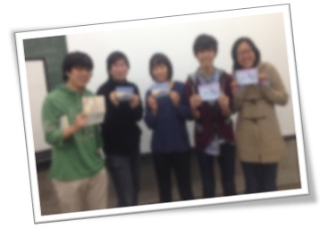

数物セミナー冬の大談話会2013
概要
この度、関東の４つの大学で数物セミナー談話会を開催します！学部生による数学・物理の講演を予定し、講演者や参加者を交えての懇談の場を設け、異分野・他大学の学生との交流の機会としていきます。これから専門を深めていく学部１・２年生や、すでに学部を卒業された院生や社会人の方々の参加も大いに歓迎します。
日にち・場所
2013年12月01日(日) 埼玉大学
2013年12月07日(土) 慶應義塾大学
2013年12月14日(土) 東京理科大学
2013年12月21日(土) 早稲田大学
各談話会の詳細ページへは、上のリンクからアクセスできます。
参加方法
事前の申し込みは不要です。期間中、会場の出入りも自由となっております。
また、この談話会では合同合宿と異なり、既に学部を卒業された院生や社会人の方々の参加も大いに歓迎します。奮ってご参加ください。
ポスター発表を希望される方は、各自で印刷したものを直接持参してください。
スタンプラリーについて

冬の大談話会ではスタンプラリー企画を開催し、各談話会の開催場所にて、数物セミナーオリジナルのMaxwell方程式スタンプを集めて頂きました。
全ての方程式を集めた方には、早稲田談話会にて表彰状を差し上げました。
Ustream配信のお知らせ

Ustreamアーカイブや発表スライドを公開しています
詳しくは、各談話会のページをご覧ください。